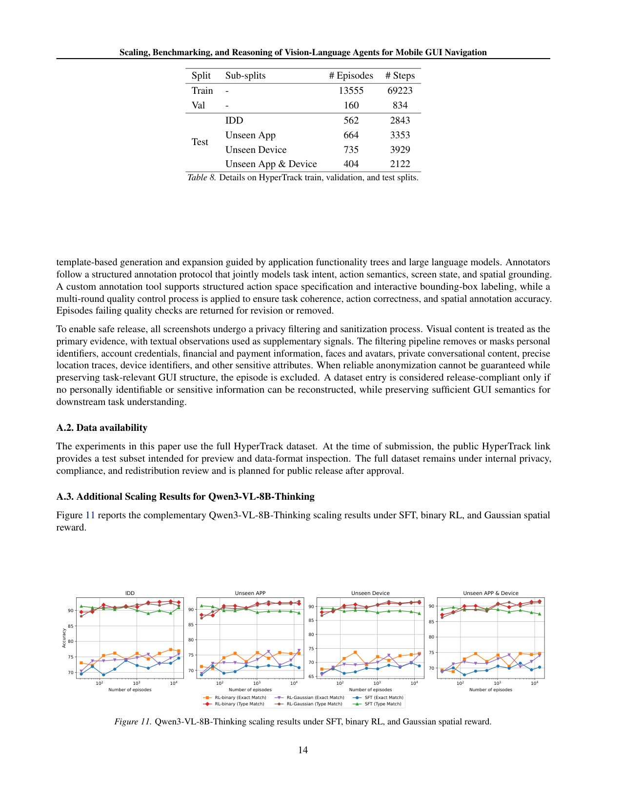
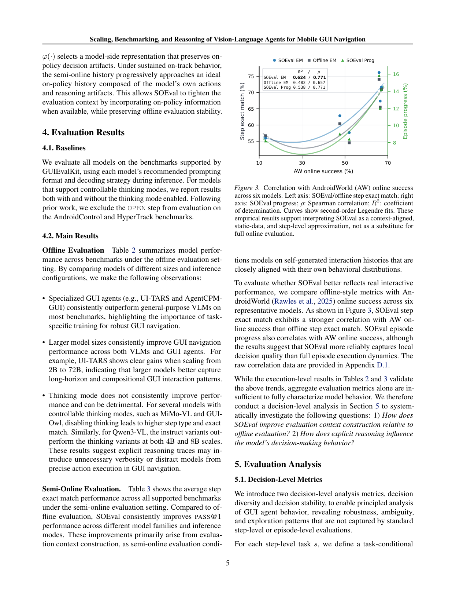
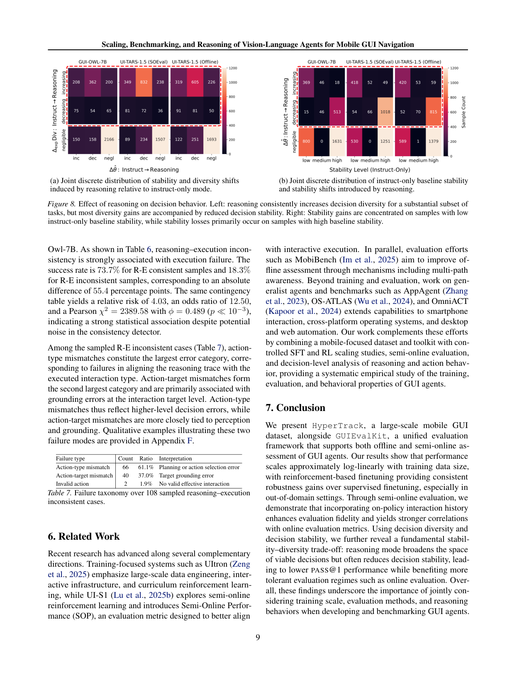
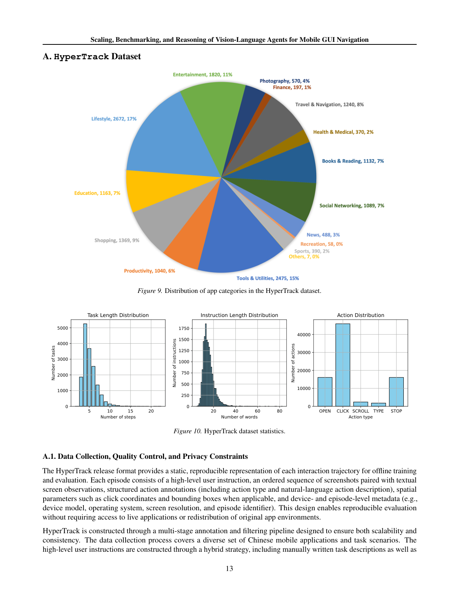

This paper systematically studies data scaling, benchmarking, and reasoning for VLM-based mobile GUI agents, introducing a large-scale dataset (HyperTrack) and a unified evaluation toolkit (GUIEvalKit) to show that reinforcement-based finetuning outperforms supervised finetuning, especially in out-of-domain settings.
本文系统研究了基于视觉语言模型（VLM）的移动GUI智能体在数据规模扩展、基准测试和推理方面的关键问题。作者构建了包含超过16,000个真实世界任务、覆盖674个中文移动应用的大规模数据集HyperTrack，并推出了统一离线评测工具包GUIEvalKit。实验表明，基于强化学习的微调（DAPO风格RL）在域内和域外任务上均显著优于监督微调，且性能随训练数据量的对数近似线性增长。
Deep Note — hypertrack
Key Takeaways - HyperTrack provides over 16,000 real-world tasks across 674 Chinese mobile apps for VLM-based GUI navigation. - Reinforcement-based finetuning (DAPO-style RL) consistently outperforms supervised finetuning, especially in out-of-domain settings. - Performance scales approximately linearly with the logarithm of training data size for both SFT and RL. - GUIEvalKit is an open-source toolkit enabling unified offline benchmarking of VLMs on GUI navigation tasks. - Interaction history and reasoning capabilities significantly influence task completion in mobile GUI navigation.
0) Metadata
- Title: Scaling, Benchmarking, and Reasoning of Vision-Language Agents for Mobile GUI Navigation
- Alias: hypertrack
- Authors: Heng Qu, Yike Liu, Renren Jin, Wenzong Zhang, Pengzhi Gao, Wei Liu, Jian Luan
- arXiv ID: 2605.27134
- Published:
- Links:
- Abs: https://arxiv.org/abs/2605.27134
- HTML: https://arxiv.org/html/2605.27134v1
- PDF: https://arxiv.org/pdf/2605.27134
- Tags: vision-language-models, gui-navigation, reinforcement-learning, data-scaling, benchmarking
- Domains: system_safety
- Rating: 4/5 (base 1 + quality 2 + observation 1)
1) Why-read
This paper systematically studies data scaling, benchmarking, and reasoning for VLM-based mobile GUI agents, introducing a large-scale dataset (HyperTrack) and a unified evaluation toolkit (GUIEvalKit) to show that reinforcement-based finetuning outperforms supervised finetuning, especially in out-of-domain settings.
2) CRGP
C — Context
Vision-Language Models (VLMs) have advanced mobile GUI navigation, but existing datasets are small and English-centric, lacking coverage of Chinese apps. The effects of data scaling on agent performance under supervised and reinforcement-based finetuning are poorly understood, and standardized evaluation tools are missing.
R — Related work
- AITW (Rawles et al., 2023): 715k tasks across 357+ apps, English only, no hierarchical docs.
- AndroidControl (Li et al., 2024): 15k tasks across 833 apps, includes bounding boxes, English.
- AiTZ (Zhang et al., 2024): 2.5k tasks across 70+ apps, includes screen descriptions, English.
- AMEX (Chai et al., 2025): 3k tasks across 192 apps, includes screen descriptions, English.
- GUI Odyssey (Lu et al., 2025a): 8k tasks across 212 apps, includes screen descriptions, English.
- CAGUI (Zhang et al., 2025b): 600 tasks across 22 apps, Chinese, no bounding boxes.
G — Gap
Existing mobile GUI datasets are small and predominantly English, limiting evaluation diversity and reproducibility. There is no systematic study of how training data scale affects VLM agents under both supervised and reinforcement-based finetuning, and no standardized toolkit for consistent benchmarking across diverse GUI tasks.
P — Proposal
The authors introduce HyperTrack, a large-scale dataset with over 16,000 real-world tasks across 674 Chinese mobile apps, and GUIEvalKit, an open-source toolkit for unified offline benchmarking. They systematically study data scaling by finetuning UI-TARS-1.5-7B with SFT and DAPO-style RL across ten training subset sizes, and benchmark SOTA VLMs to analyze reasoning and interaction history effects.
---
4) Experiments
Main results
On HyperTrack, RL-trained models achieve up to ~95% exact match accuracy on in-domain tasks with 8192 episodes, compared to ~90% for SFT. On unseen app tasks, RL reaches ~88% exact match vs ~80% for SFT. Performance scales approximately linearly with log training data size.
Ablation
DAPO-style RL consistently outperforms SFT at the same data scale, with the gap widening in out-of-domain settings (e.g., unseen app split: RL ~88% vs SFT ~80% exact match). The Gaussian spatial reward for click actions further improves grounding accuracy.
Limitations
['HyperTrack focuses on Chinese mobile apps, limiting cross-lingual generalization.', 'The dataset is collected from Android devices only, not covering iOS or other platforms.', 'The study uses a single backbone (UI-TARS-1.5-7B) for scaling experiments; results may not generalize to other architectures.']
5) Why it matters
- Provides a large-scale Chinese mobile GUI dataset that can be used to train and evaluate VLM agents for diverse real-world tasks.
- Demonstrates the synergy between data scaling and reinforcement learning, offering practical guidance for improving agent generalization.
- Introduces an open-source evaluation toolkit that standardizes benchmarking, enabling fair comparisons across future work.
6) Next steps
- [ ] Extend HyperTrack to include English apps and cross-lingual tasks.
- [ ] Investigate the effect of different RL algorithms (e.g., PPO, GRPO variants) on GUI navigation performance.
- [ ] Explore multi-modal reasoning by incorporating richer screen descriptions or hierarchical UI structures.
- [ ] Apply the scaling insights to larger VLM backbones (e.g., 13B, 70B) to see if trends hold.
7) Scoring
4/5 = base 1 + quality 2 + observation 1
面向移动GUI导航的视觉语言智能体：规模扩展、基准测试与推理
主要结论 - HyperTrack提供了超过16,000个真实世界任务，覆盖674个中文移动应用，用于VLM的GUI导航。 - 基于强化学习的微调（DAPO风格RL）在域外设置中持续优于监督微调。 - 对于SFT和RL，性能随训练数据量的对数近似线性增长。 - GUIEvalKit是一个开源工具包，支持对VLM进行统一的离线GUI导航任务评测。 - 交互历史和推理能力显著影响移动GUI导航的任务完成率。
1) 阅读理由
本文通过大规模数据集和统一评测工具，系统证明了基于强化学习的微调在移动GUI导航中优于监督微调，尤其在域外场景下优势显著。
2) CRGP（背景 / 相关工作 / 差距 / 方案）
背景：视觉语言模型（VLM）在移动GUI导航方面取得了进展，但现有数据集规模小且以英文为主，缺乏对中文应用的覆盖。数据规模对监督微调和强化微调下智能体性能的影响尚不明确，且缺乏标准化的评测工具。
相关工作：现有数据集如AITW（715k任务，357+应用，仅英文）、AndroidControl（15k任务，833应用，含边界框，英文）、AiTZ（2.5k任务，70+应用，含屏幕描述，英文）、AMEX（3k任务，192应用，含屏幕描述，英文）、GUI Odyssey（8k任务，212应用，含屏幕描述，英文）、CAGUI（600任务，22应用，中文，无边界框）等均存在局限。
差距：现有移动GUI数据集规模小且以英文为主，限制了评估的多样性和可重复性。缺乏对监督微调和强化微调下训练数据规模如何影响VLM智能体的系统研究，也缺少用于跨不同GUI任务进行一致基准测试的标准化工具包。
提案：作者引入了HyperTrack，一个包含超过16,000个真实世界任务、覆盖674个中文移动应用的大规模数据集，以及GUIEvalKit，一个用于统一离线基准测试的开源工具包。他们通过使用SFT和DAPO风格RL对UI-TARS-1.5-7B进行微调，跨越十个训练子集大小，系统研究了数据规模扩展，并评测了最先进的VLM以分析推理和交互历史的影响。
3) 实验
在HyperTrack上，使用8192个episode进行RL训练的模型在域内任务上达到了约95%的精确匹配准确率，而SFT约为90%。在未见过的应用任务上，RL达到了约88%的精确匹配，SFT约为80%。性能随训练数据量的对数近似线性增长。
消融实验
DAPO风格RL在相同数据规模下始终优于SFT，且差距在域外设置中扩大（例如，未见应用分割：RL约88% vs SFT约80%精确匹配）。用于点击操作的高斯空间奖励进一步提高了定位精度。
局限性
['HyperTrack专注于中文移动应用，限制了跨语言泛化能力。', '数据集仅从Android设备收集，未覆盖iOS或其他平台。', '规模扩展实验仅使用单一骨干网络（UI-TARS-1.5-7B），结果可能不泛化到其他架构。']
4) 重要性
- 提供了一个大规模的中文移动GUI数据集，可用于训练和评估VLM智能体在多样化真实世界任务中的表现。
- 展示了数据规模扩展与强化学习之间的协同作用，为提升智能体泛化能力提供了实用指导。
- 引入了一个开源评测工具包，标准化了基准测试流程，使未来工作能够进行公平比较。
5) 下一步
- [ ] 将HyperTrack扩展到包含英文应用和跨语言任务。
- [ ] 研究不同RL算法（如PPO、GRPO变体）对GUI导航性能的影响。
- [ ] 通过整合更丰富的屏幕描述或层次化UI结构，探索多模态推理。
- [ ] 将规模扩展的见解应用于更大的VLM骨干网络（如13B、70B），以验证趋势是否成立。



